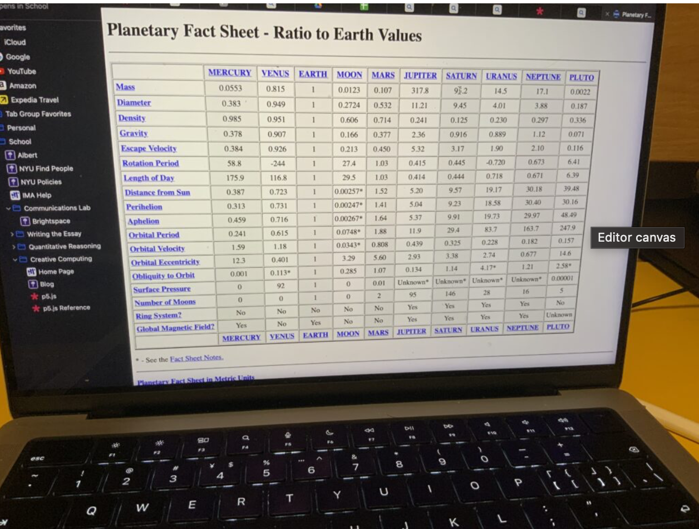
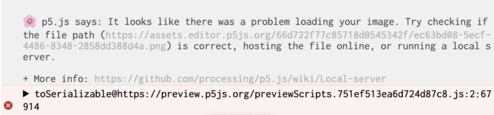

Documentation
Process
I started first with implementing the spheres and the basic orbiting logic of these spheres around the center of the solar system. In order to have some level of resemblance of reality, I used a chart as a reference for the relative sizes of the “planets”, how far away they are from the sun, and how long did it take for each of them to complete a full orbit around the sun.
I decided to ajust many of these values and sacrifice accuracy for the sake of aesthetics since, all-in-all, this is a creative computing assignment and not a physics assignment. One example is that the planets would be extremely far apart if the distance in between them is relative to their actual sizes before I made the adjustments. The sun in reality as we all know is also much much much larger than the depiction of it in my program but again it would ruin the aesthetics of the work.


WEBGL
The next big challenge for me is to use the WEBGL function for the first time to draw the planets in 3D. I relied on the p5.js reference website and Github heavily in order to understand how the coordination system works on a 3-Dimensional canvas. And during the process, I encountered numerous basic issues such as the circle not being round enough, spheres rotating about the wrong coordinates, and the axis of rotation being the same for every single planet. However, these issues weren’t overly difficult to fix with the help from the online community and the reference website.
Importing Images
I then started adding textures to each planet by importing images of the surface of planets to p5.js. An issue with that was that the images wouldn’t load if I access the code file using my p5.js account, but succesfully loaded when I opened it logged out of my account. This issue still occurs frequently and based on my understanding is not an issue regarding my code but is related to the browser’s privacy settings or something along those lines.
Otherwise, the process was pretty successful. I mostly took the images from this website:https://sketchfab.com/feed and the link to each of the images are specified in the comments of the code.
Basically what I did after adding the textures was to refine and introduce a bunch of functions to the existing basic logic of planets orbiting around the sun:
- I used arrays and objects to organize all the similar variables or objects and used a single for loop to do most of the work.
- I made the circles that illustrate the orbit paths of each planet rounder by using ellipses instead of circles.
- I allowed each planet to rotate about a different axis
- I introduced the pause function so that the viewer can pause the animation to see each planet better
- I added a moon that orbits around the Earth
- I also added a ring to Jupiter
- And I made minor changes here and there to help the program run better